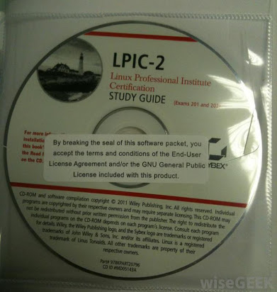
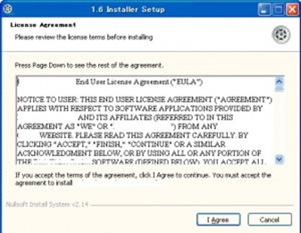
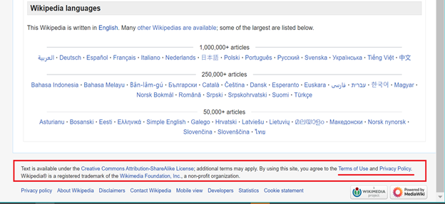
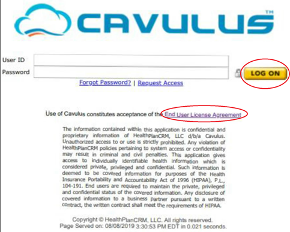

By Cameron Si, 2nd July 2021
| Abstract and Introduction | 4 | |
| Part I - Contracts of Adhesion - “The Foundation” | 4 | |
| 1. Origin - Emergence and Identification | 4 | |
| 2. Lawfulness of the ‘Non-negotiated or Standardized Clauses’ in Adhesion Contracts - The “Meeting of the Minds” | 5 | |
|
7 | |
| Part II - Wrap Contracts | 10 | |
| 1. Wrap Contracts - A Different Form of Adhesion Contract in the Digital Age | 10 | |
| 2. Types of Wrap Contracts - Shrinkwraps; Clickwraps; Browsewraps | 10 | |
|
10 | |
| Part III - Discussion - Reconciling Wrap Contracts and Adhesion Contracts and the Implications of the Different Laws | 19 | |
| 1. Assent and Knowledge Assessments | 20 | |
| 2. Unconscionability and Good Faith Assessment | 21 | |
| 22 | |
| 3. Contra Proferentem to Remedy Imbalances and “Blue Pencil Doctrine” to Save the Contract | 24 | |
| Conclusion | 25 | |
| Appendices | 26 | |
| Bibliography | 28 |
Abstract and Introduction
Wrap Contracts are closely related to adhesion contracts and have been widely used in the 21st century. Wrap contracts are easy means for businesses to implement standardized adhesion contracts through 3 primary forms - (1) Shrinkwraps, (2) Clickwraps, and (3) Browsewraps.[1] Adhesion contracts have thus become even more prevalent and implemented in business relationships. It is thus important to first understand adhesion contracts’ definition and the decisive factors within, which act as the general rule for wrap contracts, before specifically assessing the specific issues arising from businesses implementing different forms of wrap contracts.
This paper will thus be separated in 3 parts under a chronological order, with “Part I” first introducing the emergence of standardized contracts and adhesion contracts and their applicable laws, and “Part II” will elaborate how digitization of contracts have made “good use” of standardized contracts through case and legislative studies on mostly the US and the EU, and lastly, “Part III” will consolidate the important rules laid down from Part I and II, and assess their similarities and implications.
Part I - Contracts of Adhesion - “The Foundation”
1. Origin - Emergence and Identification
French jurist, Raymond Saleilles, published the discovery of adhesion contracts as early as in 1901. Adhesion contracts were considered to have deceptive appearances in contractual relationships, since they predominate a single or unilateral will which dictates the contracting law in advance, and omit the other contracting party’s will or intention, and create “indeterminate collectivity” during the contracting process. Subject to the adhesion of the weaker parties, the weaker parties are being taken advantage of once they accept the contract of adhesion. To further illustrate the unconscionability within, it is because these standardized contracts are wholly drafted by the predominant (stronger) parties, the predominant parties would intentionally favour themselves and position themselves in a much stronger bargaining position, and thus create injustices through unequal bargaining power. In history, adhesion contracts were widely used in insurance contracts in America.[2]
Another scholar, Kessler, defined contracts of adhesion (1) as “standardized contracts”, and (2) are “à prendre ou à laisser” (take it or leave it, and non-negotiable), and (3) adhesion contracts are often used when there is unequal bargaining power between the contracting parties. This significantly affects weaker parties that need the goods or services, and who are not free to shop around for better contracts because the drafting party has monopolistic power or the other competitors also incorporate identical clauses.[3] US courts have adopted Kesslar’s interpretation and many cases have defined adhesion contracts as simply “a standardized contract, which, imposed and drafted by the party of superior bargaining strength, relegates to the subscribing party only the opportunity to adhere to the contract or reject it”.[4]
The above mentioned elements will become more lively later in part 2 of this paper, when digital wrap contract case laws are investigated. The unequal bargaining power plays an important role and in many cases, the court has refused to uphold those adhesion or wrap contracts.
2. Lawfulness of the ‘Non-negotiated or Standardized Clauses’ in Adhesion Contracts - The “Meeting of the Minds”
Nonetheless, the Encyclopedia of American Law[5] provided a general guidance and the basic position that adhesion contracts or standardized contracts have “nothing unenforceable or even wrong”, and like normal contracts, not all adhesion contracts are invalid or valid. This is important, because the common law respects contractual freedom, and would like to assess every contract on a case-by-case basis.
In a US case, Fairfield[6], the superior court judge, Donald S. Coburn, held that a non-negotiated clause (standardized clause) that appeared “inconspicuously or not clearly visible” in a standardized contract would not be enforceable. The required degree of conspicuousness was thus referred to the New Jersey (US) statute, N.J.S.A. 12A:1-201(10)[7], which requires the term or clause to be written in a manner that “a reasonable person against whom it is to operate ought to have noticed it”. Subsect (10)(a) within also provided the degree of conspicuousness required for “headings”, which is to be written in capital letters with equal or greater font size than the surrounding text, or written with contrasting type, font, or color would also suffice. Subsect (10)(b) subsequently provided the degree of conspicuousness for “the content within the paragraphs”, which is the same as “headings”, but with an extra option for the drafter to use symbols or markers that would call the reader’s attention.
The required degree of conspicuousness is similar to regulations and laws on incorporating standard business terms into contracts in the European civil law. Art. 2:104 of the PECL[8] stated that non-negotiated terms do not automatically fail. However, the drafting party must have taken reasonable steps to bring the other party’s attention before or during the conclusion of the contract, before the drafting party can invoke the non-negotiated terms. A signed contract will not bypass this requirement. In Germany, s.305(2) of the BGB[9] also stipulated that standard business terms can only become a part of a contract if the drafting party refers the other party to those terms explicitly by posting a clearly visible notice, and gives the other party the opportunity to take notice of their contents in an acceptable manner, before the voluntary agreement of the contract. S.305(1) BGB also presumes that standard business terms do not automatically arise from contract terms pre-formulated from two or more contracts, just because the terms have been negotiated in detail between the parties. The European civil law clearly imposes a high standard on the drafting party.
Comparing with the traditional common law precedents, the traditional common law demonstrated a slightly different approach. Firstly, written contracts are categorised as to whether they were “signed” or “unsigned” (c.f. Art. 2:104 (2) of the PECL), and different standards will apply accordingly.[10] Using the same case facts in Fairfield[11], since the defendant signed a standardized lease for a coffee machine, the traditional common law approach in L’Estrange[12] will have the clause bind the signing party even if he had not read it before signing. Srutton LJ in L’Estrange stated that it is wholly immaterial whether the party has read it or not. In Luna[13], Hill J even held that the party signing demonstrates the unequivocal intention to contract, and the party relying on the clause does not have to advise them to read it, even if he knew that the party signing did not understand the language. It is immaterial as to whether the party has read it or not, and the binding clause would only be vitiated if there was deceit, such as fraud or misrepresentation.
In reality, Fairfield[14] handed down a judgement contrary to the traditional common law. The overriding reason was because of the N.J.S.A. 12A:1-201(10) legislation that trumps common law precedents. This perhaps indicated that legislators felt that the common law was insufficient to provide the necessary protection for weaker parties against standardized or non-negotiated contractual terms. Legislators did not want signed standardized contracts to become a leeway for strong monopolistic parties in society to exploit the weaker mass public.
Contrastingly, unsigned written contracts in common law are much more protected and the ratios are similar to the modern US and EU civil law legislations. The burden of proof lies on the party relying on the terms to prove that the written terms were incorporated into the unsigned contract properly. The UK’s court of appeal handed down three binding precedents that provided three overlapping preconditions that act as the general rules for proper incorporation for unsigned contracts.[15] Firstly, the notice of the term must have been given before or at the time of contracting (Thornton v Shoe Lane Parking Ltd[16]). Secondly, the term was stipulated in a notice or document that a reasonable person would regard it to have contractual effect (Chapelton v Barry Urban District Council[17]). Thirdly, the party relying on the terms have taken reasonable steps to draw the other party’s attention to the terms within the document (Parker v The South Eastern Railway Company[18]). Lastly, what satisfies the degree of reasonable notice varies in the common law. Interfoto[19] held that onerous clauses, such as exorbitant clauses, require additional steps to draw the other party’s attention. Lord Denning LJ’s obiter dictum on the “red hand rule” in Spurling[20] was adopted as ratio in Thornton[21], which held that clauses printed in red on the face of the document with a red hand (symbols) pointing to it could thus amount to sufficient notice to the other party. The rationale of the “red hand rule” rule has also been considered in modern legislation (cf. s.305(2) BGB and N.J.S.A. 12A:1-201(10)).
To conclude, standardized contracts are thus not per se unenforceable[22] in the common law or the civil law, and the fact that the terms were non-negotiated does not automatically fail their incorporation into contracts, or trample the meeting of minds (consensus ad idem) during the contracting stages. The “agreement”[23] is enforceable as long as the required steps are adhered to. This presumption would respect the conventional idea of the freedom to contract in the business world, as mentioned in Printing and Numerical Registering Co v Sampson[24]. Legal scholars, such as Trakman[25] and Kim[26] agreed that adhesion contracts must be regulated through other perspectives, namely “assent” and “unconscionableness”. These positions were also expressed in the recent case of Columbus Reg'l Hosp. v. United States[27] that stated, “standard-form agreement without negotiated terms can be a binding contract if it is not unreasonable or fraudulent”.
2.1 Decisive Factors (1) - “Assent” and the “Intention to Create Legal Intentions”
“Assent” is one the decisive factor for courts to decide whether an adhesion contract should be upheld. The reason was mentioned in Restatement (Second) of Contracts[28], and was because parties who regularly use standardized forms of agreement do not ordinarily expect their customers to understand or read the standard non-negotiated terms, thus taking advantage from the circumstances. This would have infringed one of the key pillars of contract formation, namely “the intention to create legal intentions”, which is a higher threshold than a simple intention to contract for a product.
Both the civil law and common law prescribe requirements for satisfying the intention to create legal intentions, through precedents and legislation. To start with European civil law, s.1(a) of Art. 2:101 PECL[29] stipulated that the parties must have intended to be legally bound, which is one of the conditions for the conclusion of a contract. Art. 2:102 PECL further guides contracting parties to identify whether there was such “intention”, which is through determining a party’s statements or conduct through reasonable understanding by the other party. The standard of reasonableness can be defined under Art. 1:302 PECL, which is the judgement from a person acting in good faith under the contracting circumstances of the case, taking account of the usage and the practices of the trades or professions involved. In practice, whether the offeree had the intention to create legal intention to conclude the non-negotiated contract would be demonstrated through his assent to the contract, where Art. 1:305 PECL specified that the standard is that the offeree has actually or ought to have known or foreseen, or acted intentionally or with gross negligence, or he, himself, was not acting in good faith and fair dealing. Therefore, a party’s demonstrated intention can allow the court to decide whether the non-negotiated contract should be discharged or not, since a fair balance must be struck and the court would not just allow any weaker party to avoid any contract just because he claims to have no intention to create legal intentions afterwards.
Contrastingly, in the traditional UK common law case of Kleinwort Benson Ltd. v Malaysia Mining Corporation Berhad[30] documented that the court would presume that a contractual intention exists for commercial agreements, and the party seeking to discharge or invalidate the contract would have to show otherwise, that a contrary intention existed. SInce there is this presumption, the heavy onus (burden) of proving otherwise,"is on the party who asserts that no legal effect was intended” as mentioned by Megaw J. in Edwards v. Skyways Ltd.[31], and strong and clear language in the contract must show otherwise. The courts will then also apply an objective test under the surrounding circumstances, by “attaching weight to the importance of the agreement of the parties, and to the fact that one of them has acted in reliance upon it”[32] for completeness, and rebutting the presumption to contract in commercial context is rare under the common law.
As shown, the traditional common law provides insufficient protection and would impose a heavy burden on the weaker party to dispel his assent to an adhesion contract under a commercial context. The laws have thus evolved in the US, and newer US cases[33], emerged and bypassed the stringent presumption, by upholding that a standardized contract will not be enforced against the weaker party when “[it is] not within that party's reasonable expectations”. This ratio reconciles the US with civil law principles, adopting a similar reasonable test to decide whether a common intention existed between the parties. However, the AEB[34] case maintained that the reasonable standard for commercial context in the US is whether the agreement was “so grossly unreasonable or unconscionable in the light of the mores and business practices of the time and place as to be unenforceable according to its literal terms. (from the Gilman[35] case)”. This higher standard of reasonableness is closer to the common law ratio in Edwards v. Skyways Ltd.[36] (where the rebutting party has a heavy onus), than what was prescribed in civil law (c.f. Art. 1:302 PECL), which did not include the word “grossly unreasonable”. The reasonableness standard in the US could thus be said as a middle ground between the civil law and the common law.
2.2 Decisive Factors (2) - “Unconscionability” and “Good Faith”
In the US, both AEB and Finkle and Ross cases[37] stipulated the second criteria for the court to refuse the enforcement of a standardized contract, which is when “[the contract] is unduly oppressive, unconscionable or against public policy”. American legal scholars have long recognised that unconscionability in contract law is divided into two big categories for assessment, namely the “procedural” and the “substantive” unconscionability.[38]
“Procedural unconscionability” builds upon the ”freedom of bargain” principle, and thus issues usually arise during the early stages of contracting between the parties, and the court would have to assess whether there was sufficient bargaining conduct between the contract parties to “insulate” judicial interference, which renders it unnecessary for the court to even assess the contract that was allegedly “substantively unconscionable”. For example, the contract remains valid if evidence shows that the contract was made under the “deliberate desire” between the parties.[39] Procedural unconscionability is thus especially related to adhesion contracts since they relate to issues such as intelligence, knowledge, bargaining power, etc., that affect a party’s decision making during the contracting process.
The other branch, “Substantive unconscionability”, is related to the unconscionability of the actual terms and clauses in the contract in issue, and is distinguished from procedural unconscionability. Leff described substantive unconscionability with the general definition of the ““gross overall imbalance” of an entire contract”.[40] In a recent US case, Emmanuel v. Handy Techs., Inc.[41], Judge Barron in the Court of Appeals held that a party invoking the unconscionability doctrine must identify the terms that are substantively unconscionable. Furthermore, it is to note that procedural unconscionability can build the circumstances for the court to assess whether substantive unconscionability existed under those circumstances. In the case, the plaintiff failed to challenge the arbitration clause since he brought a wrong challenge to invalidate the whole contract, which widened the premise in favour of the defendant, and the plaintiff also failed to address his issue to the right decision maker, the arbitrator in the first instance. Therefore, it is critical to angle an argument in an unconscionability case.
Another American barrister, Marrow[42], also mentioned that the inherent American statutory scheme is permitting an assumption of unconscionability regardless of whether it existed and the courts are free to adopt any equitable standard to address the issue, as long as the legislation did not cover the issue. However, judges must follow the test of whether the commercial contract in issue was so one-sided or oppressive that is likely to cause an unfair surprise, rendering it unconscionable, as stated in the US’s Uniform Commercial Code (U.C.C.)[43], and the mere existence of an unequal or superior bargaining power that merely creates risk for the weaker party is insufficient. In practice, the American judiciary has responsibility to identify the circumstances of contracting and to prevent unlawful unconscionablenesses, and has great discretionary powers to judge on whether the unconscionableness was sufficient to alter or void the contract. This is similar to the common law courts of equity that would only remedy parties under a case by case basis.
The US doctrine of unconscionability is also analogous to the “principle of good faith” in the EU’s civil law. Art. 1:102(1) and Art. 1:201 of the PECL[44] both mentioned the importance of “good faith and fair dealing” in contract law, and this duty cannot be excluded or limited. Art.3 of the UCTD[45] explicitly mentioned that non-negotiated contractual terms are unfair when they cause a significant imbalance in the parties’ rights and obligations that are detrimental to the consumer, and pre-formulated standard contracts should always be regarded as “not individually negotiated”, which is unfair. The offeror has the burden to prove that the standard term has been individually negotiated and is not unfair.
For more precise assessment, the European civil law also categorises and layers good faith into “subjective” and “objective” good faith. Subjective good faith is merely related to the subjective state of mind of a party according to their own knowledge, which is considered insufficient in civil law. The civil law mainly focuses and emphasises on objective good faith, and the German Code referred to it as ‘Treu und Glauben’ whilst the Dutch Code stipulated ‘reasonableness and fairness’. Therefore, the objective principle of good faith is the norm or standard for contracting parties to uphold. However, a common criticism is that the actual standard is uncertain and depends on the discretionary power of the civil law courts to define and assess through precedents and to synchronise the legal standards with societal developments.[46]
Nonetheless, European countries such as France and Germany have already explicitly adopted the principle of good faith in their civil codes.[47] The rationale behind the importance of good faith and fairness was mentioned in a report on the agricultural and food supply chain industries from the European Parliament, which held and recognised that the imbalances in bargaining power are likely to lead to unfair trading practices, since powerful parties can unilaterally impose commercial conduct that are contrary to good faith and fair dealing on a weaker party, thus grossly deviates from “good commercial conduct”. These practices often transfer unjustified and disproportionate economic risk to the weaker party, and are possibly “manifestly unfair” even if the weaker party agrees with knowledge (i.e. consented).[48] The aforementioned are relatable to the weaker parties who participate in adhesion contracts, since they will also experience imbalances in bargaining power, and stronger parties generally have the incentive to take advantage of or exploit them, by expecting the weaker party to adhere to the terms and agreements without reading.
To summarize, the traditional common law does not provide general principles of good faith (unless duress, fraud or misrepresentation) as mentioned in Walford v Miles[49], and contracting parties were believed to be capable of taking care of their own interests, yet adhesion contracts and large powerful corporations have emerged in modern society and created severe imbalances in bargaining power between contracting parties. This perhaps suggests that the traditional common law is also insufficient in this aspect, and apart from the US, other common law countries have also modified their position by legislation[50]. To date, legislation in combination with judicial discretion is the way to regulate fairness and unconscionability against standardized contracts, and perhaps civil and common law jurisdictions are closing their gaps in contract law.
Part II - Wrap Contracts
1. Wrap Contracts - A Different Form of Adhesion Contract in the Digital Age
Wrap contracts are similar to adhesion contracts, since they both contain standard non-negotiated terms and the weaker adhering party seldom reads the clauses within. In Part 1, it has been discussed that standardized contracts are not per se unenforceable, but there is a main difference that is “game-changing”, which is the different form of delivery of the contract
Traditional adhesion contracts are mostly presented “on paper requiring a signature”, but wrap contracts are presented in digital form (eg. on computer screens).[51] This different delivery method creates new unconscionable or unfair issues on assent that is new for judges to consider and assess. For example, some wrap contracts like valid “Browsewraps” bind consumers without them even knowing and might “bite them in the back” in the future. This often happens in the fast-paced internet world, where the average consumer fails to read, or is unable to negotiate or understand the legal terms within, or did not foresee that the contract might create potential legal issues in the future.
However, for businesses, in order to maximize the efficiency of these wrap contracts and to bind victims, these standardized wrap contracts are often delivered through a medium or manner that would deceive the average consumer that it is only a “ceremony and formality” that every other consumer would have to undergo. Since many digital contracts like these often do not require the consumer to pay money at the time of contracting, the average consumer would neglect or be misled to believe that there is no price to enter into these contracts, which is foolish yet understandable. Law professor and legal philosopher, Lon Fuller, also pointed out that online contracts have significantly undermined the three cornerstones of traditional contractual formality, namely, “evidentiary, cautionary, and channeling”, which traditionally encourages every party to deliberate before entering a legally binding transaction.[52]
2. Types of Wrap Contracts - Shrinkwraps; Clickwraps; Browsewraps
It is thus important to start by understanding what mechanisms are commonly used to deliver the standardized contracts to consumers in the digital age. Professor Kim[53] suggested that there are three primary types of wrap contracts, namely “shrinkwraps”, “clickwraps”, and “browsewraps”.
2.1 Shrinkwraps
“Shrinkwraps” are like “rolling contracts” which only allow the customer to review the contract terms after he has ordered and paid for the goods. In practice, shrinkwraps refer to a contract that is concealed inside a layer of plastic wrap, and is hidden together with the compact disc.[54] Nonetheless, shrinkwraps are arguably becoming less relevant in the modern context because of the emergence of digital downloads. However, the precedents remain good law, and form a small foundation for other types of wrap contracts.
2.1.1 The US - Implied Acceptance
In the landmark case of ProCD, Inc. v. Zeidenberg[55], the US court of appeals also identified that “shrinkwrap license” becomes effective in law as soon as the customer tears the wrapping from the package, and there is presumption that “Shrinkwrap licenses are enforceable unless their terms are objectionable on grounds applicable to contracts in general (for example, if they violate a rule of positive law, or if they are unconscionable)”. As a result, as long as the State (Wisconsin) did not forbid the use of standard contracts, the presumption stands to facilitate mass production and distribution business activity, which usually benefit consumers with more competitive prices.
However, to prevent unconscionability and abuse, the court would take a step further and assess the circumstances of the case, and decide whether the definition or the presumption could be rebutted. In ProCD, Inc. v. Zeidenberg, the courts studied the s.2–204(1) of the Uniform Commercial Code (U.C.C.)[56] for reference, which stipulated that the contract for sale of goods may be made in any manner as long as it is sufficient to show an agreement between the parties, such as from both parties’ conduct which demonstrates that they recognize the existence of such a contract. As a result, ProCD delayed the presumed time of acceptance of the shrinkwrap licences. This was because ProCD proposed the contract to the buyer, Zeidenberg, who would only have accepted the contract by “using” or operating the software without returning it after reading the license. Zeidenberg could not have argued that he had accepted the contract before this time and did not have the opportunity to read the licence before acceptance. ProCD’s argument prevails because it had designed the software to first display the compulsory license screen every time before the buyer (Zeidenberg) could use the software, and it was not optional for the buyer to bypass it. Furthermore, ProCD had also encoded the licence agreement on the CD-ROM disks and printed them in the user’s manual. Resultantly, when Zeindenberg chose to proceed and agreed to the terms every time, and after trying out the software every time but remained unsatisfactory with and disagreeing to the license terms within, but still kept on using the software instead of returning it, these actions constituted implied acceptance to the licence because he failed to make an effective rejection after given the opportunity to inspect under s. 2–606(1)(b) U.C.C.. This also proved that Zeindenberg failed to rely on his buyer’s right to reject the goods under s.2-601 U.C.C., and it was his burden to disaffirm his assent in the agreement.
Kim[57] and other scholars questioned this ruling since this judgement is effectively placing a “heavy” burden on the consumer, and raised a counter-argument that silence or inaction should not be treated as acceptance, and it might simply be too troublesome for a consumer to return the software back to the store. However, this is a weak argument because even when a tourist customer purchases a product in a physical store and intends to take the product to a foreign country, the sale still amounts to a domestic sale of goods, and s.2-327(2) U.C.C. prescribed that when the buyer wishes to return the accepted goods, the default rule is that the return is at the buyer’s risk and expense, unless there were other agreements beforehand, and this option to return must be exercised reasonably. It would be insufficient to argue that it is too troublesome for a consumer to return the purchased item, so he should be allowed to continue to use it. This creates injustice and unfairness for the seller. The laws of equity in the common law systems would also view this as “laches”, which is the buyer’s delay to assert his right, and this delay is unfair for the court to provide relief since the buyer’s delay amounted to a waiver, and the defendant would have changed his position because of the delay.[58] This is included within the equitable maxim of “Equity aids the vigilant not the indolent”. The majority of US courts have continued to support ProCD’s judgement.[59]
2.1.2 The More Protective EU
In the EU, the UCPD[60] regulates shrinkwrap contracts, and many EU Member States considered them hard to enforce and recognize them in law, since the terms and conditions are only contained inside the physical packaging, and consumers would fail to inspect and review the terms and conditions before the purchase. Similar to adhesion contracts mentioned in Part I, Article 3 and Annex 1(i) of the UCPD stipulated that it is unfair and unenforceable when terms “irrevocably [bind] the consumer to terms with which he had no real opportunity of becoming acquainted before the conclusion of the contract”. The US approach in ProCD, Inc. v. Zeidenberg is thus inapplicable in the EU, which provides much more protection for consumers.[61] This stringent approach would probably be supported by ProCD critics.
However, it is important to note that Art.3 of the UCPD can be possibly bypassed if the licence agreements were displayed on the top of the shrinkwrap or attached separately on the surface of the box (eg. like a booklet), allowing and reminding the customer to review the agreement before the purchase. Nonetheless, this might violate the definition of a shrinkwrap since the licence agreements were not in the box, and there might be no shrinkwrap at all.
2.2 Clickwraps
Clickwrap agreement is one of the most common and innovative digital contracts in the market. As the name suggests, a “click” from the user is crucial as it proves the user’s assent. In practice, a pre-drafted agreement would be displayed on the user's screen and there is a check-box beside the phrase “I agree” or similar, waiting for the user to accept. This check-box is usually situated on top of or below the agreement for the user’s convenience, and the user can click and check the box if they agree to the agreement. Normally, clickwrap agreement does not permit the user to progress and use the product until he agrees to the agreement.[62]
2.2.1 US’s General Test Upholding Clickwraps
In the US case of Feldman v. Google, Inc.[63], there was a clickwrap agreement on an internet webpage and required the user to provide consent and agree to any terms or conditions by clicking on a dialog box, before the user was allowed to proceed with the internet transaction. It was held that electronic clickwrap agreements are treated like express written contracts since they are printable and storable, and the traditional principles of contract law should be applied to assess whether the user was given “reasonable notice” and “manifested assent” to the clickwrap agreement. Although the plaintiff (user) argued that there was no meeting of minds since he did not have notice or knowledge, there was no submerged or hidden agreements that the user would have to search for or locate them at another page. The agreement was immediately visible to the user and there was a “prominent admonition in boldface” to remind the user to read the terms and conditions carefully and with “instruction to indicate assent” if the user agrees. The court even assessed the format of the agreement, which was presented in “readable 12-point font”[64] with only seven paragraphs long. The court thus decided that it was not inconvenient or impossible for the user to read all of the terms. Furthermore, a printer-friendly version was also made readily available, and a prudent internet user would have ample time to review the agreement. This clickwrap agreement was thus held to have provided reasonable notice, and the plaintiff (user) had provided unequivocal assent by clicking on the “Yes, I agree to the above terms and conditions” button. The general rule is thus that clickwraps are valid if there was “reasonable notice” and “manifested assent”.
In another case, Specht v. Netscape Commc'ns Corp.[65], it distinguished Feldman, because the terms and conditions were “submerged” in Specht, such as only being visible when the users scrolled down to the next screen and also clicking on another hyperlink afterwards, and there was no visible indication that by clicking the installation or download button is equivalent to the user agreeing to the terms and conditions of the contract, these mechanisms used together would not allow a reasonably prudent offeree (user) to have necessarily realize the existence of the license agreement. As a result, although a party cannot avoid the terms just because he fails to read it before signing, the contract and terms must be called to the attention of the recipient in order to establish assent or constructive assent, which would hold the party ought to have known of the existence of the terms. Therefore, the true standard of assessment of conspicuousness in the US is whether a “reasonably prudent offeree in the circumstances” would have known of the terms which constitutes to the consumer’s constructive assent or manifested assent.
2.2.2 US’s Unconscionability Assessment
Nonetheless, back in Feldman[66], it was demonstrated that the US court would also analyse whether the clickwrap agreement was unconscionable. Like conventional adhesion contracts, the procedural and substantive limbs were assessed, and the challenging party (user) has the burden to prove unconscionability. The Comb v Paypal[67] case on adhesion contract was adopted and held that the procedural unconscionability is not limited to the inability to negotiate, but the courts would also consider the buyer’s sophistication and whether there was the use of high pressure or external pressure tactics to induce acceptance, and whether there was substitutions for the product in the market; whilst the substantive component is to assess whether the terms will create overly harsh or one-sided results that ‘shock the conscience’.
On the procedural limb assessment in Feldman, Google (defendant) pleaded the defence that the plaintiff could have chosen other advertisement providers which were widely available if he did not agree to the terms, and the plaintiff had full notice of the terms, which makes him a sophisticated purchaser. Since the plaintiff failed to demonstrate sufficient evidence to rebut the defence, and the plaintiff had the burden to prove unconscionability, the court failed to find procedural unconscionability. This case upheld the general rule that standardized contracts are not inherently unconscionable.
Under California law, the substantive limb is more important, because even when a contract was found procedurally unconscionable, it may still be valid if the substantive terms are reasonable. The court in Feldman nonetheless held that it was not substantively unconscionable, since the choice of jurisdiction clause or other provisions contended by the plaintiff was not unreasonable or shocks the conscience, which is a high burden to satisfy. The court compared the jurisdiction clause therein with other jurisdiction clauses used in the cruise line industry, and held that jurisdiction clauses are reasonable when the defendant’s business had international clients, and the benefit is to merely dispel confusion over the governing jurisdiction, which ultimately conserves the litigant and judiciary’s resources. Moreover, since US precedents allowed parties to agree on contractual limitation period clauses that are shorter than the periods prescribed by statute as long as a reasonable time was provided, it was held not substantively unconscionable either.[68] Lastly and most importantly, the defendant included a severability clause within, therefore even if any provisions of the contract were unenforceable, they could be modified or severed. The court thus concluded that the plaintiff failed to prove the clickwrap was substantively unconscionable either. Substantive unconscionability is quite hard to demonstrate, unless there was clear unconscionability.
In a clear-cut unconscionable clickwrap case, Bragg v. Linden Research, Inc.[69], the plaintiff agreed to a clickwrap terms of service (TOS) since he wished to participate in a virtual world game. The court also used the unconscionability assessment. Under procedural unconscionability, it was found that the TOS was a contract of adhesion since the TOS was presented on a “take-it-or-leave-it” basis and if the plaintiff had refused assent to the TOS, he would be denied access to the virtual world. There were no available market alternatives or substitute products with the same in-game “feature” for the plaintiff to choose from, which is also a decisive factor in the claim. Lastly, the TOS was also executed and displayed in a misleading manner, forming the element of “surprise”[70] which avoids the objective (by-stander’s) view from aligning with the drafter’s subjective view. The TOS was buried under a lengthy paragraph and was headed as “General Provisions” equivocally. Therefore, although the plaintiff was an experienced attorney, it did not stop the court from deciding that the defendant had superior bargaining strength over the attorney, since the attorney was not given the opportunity to use his lawyering experience and skills to negotiate the TOS.
Under the decisive assessment of substantive unconscionability, which may remain the contract enforceable regardless of procedural unconscionability, the court in Bragg still found that the arbitration provision in issue was substantively unconscionable. The element of “mutuality” was breached, and the arbitration remedy did not contain a “modicum of bilaterality”, such as by forcing the weaker party to undergo arbitration but permits the stronger party to choose the jurisdiction.[71] The TOS remedies in Bragg was even worse and more one sided, and it stated that the offeror “has the right at any time for any reason or no reason to suspend or terminate your Account, ... Agreement, and/or refuse any and all current or future use of the Service without notice or liability to you” and breaches were “determined in Linden's (drafters) sole discretion”, and reserves the right not to return money at all based on mere “suspicions of fraud” or other legal violations, and the drafter “may amend this Agreement ... at any time in its sole discretion” with notice. These extremely wide clauses provide near-complete protection and the power to modify for the offeror, and authorize the offeror to perform unilateral conduct that pressurizes the plaintiff during arbitration. The provided arbitration cost in the TOS was also unreasonably high, which was even higher than the plaintiff filing an action in a state or federal court. The court then also found that the agreed arbitration venue (forum venue) was intentionally fixed to a place to create great inconvenience for customers, and violated the US California law which stipulated that it was unreasonable for individual customers from throughout the country to travel to one locale to arbitrate minimal sums claims. Considering altogether, the agreement was held substantively unconscionable.
To summarize Bragg, the case demonstrated that where a clickwrap agreement was deliberately drafted to ensure that any litigants against the drafter would suffer great inconvenience, and to ensure that the drafter retains a much stronger bargaining power in every aspect, will be construed as clear substantive unconscionability. Lastly, although the court in Bragg considered and even the defendant (drafter) offered to modify the arbitration provision by undergoing a “bluelining” process, which removes the substantively unconscionable elements and to save the contract, the court decided that the arbitration provision was “so permeated by substantive unconscionability”, and it cannot be cured by severance or other ways. Since the court would not rewrite the entire contract and were not obliged to “blueline” the agreement, the entire agreement was void.
2.2.3 EU Permitting Clickwraps Like Express Written Contracts
The Court of Justice of the European Union confirmed that “click-wrapping” (EU’s term for clickwraps) is permitted in the case of Jaouad El Majdoub v CarsOnTheWeb.Deutschland GmbH [72] in 2015. The setting of the case was a dispute in a “Business-to-Business (B2B)” relationship, where both parties were car dealers, and the issue was whether the purchasing dealer was bound by the seller’s general terms and conditions (jurisdiction clause) on the seller’s website after ticking a checkbox that indicated his assent. The plaintiff contended that the clause was not validly incorporated into their agreement since it was not in writing, as specified in Art.23(1)(a) of the Brussels I Regulation[73], and their agreement violated Art.23(2) of the said provision since the terms and conditions did not pop-up automatically (note: Art.23(1)(a) and Art.23(2) has now been replaced by Art.25(1)(a) and Art.25(2)[74] respectively, with minor changes in the requirement of domicile and the assessment of substantive validity that nulls and voids agreement). Both provisions required jurisdiction clauses to be in writing, but “any communication by electronic means which provides a durable record of the agreement shall be equivalent to ‘writing”.
The court first identified that this was a “click-wrapping” case, since the purchaser agreed to the terms and conditions by clicking on a hyperlink, which then opened up a new window with the terms and conditions. The court then started to analyse the pleadings advanced by the plaintiff. The judgement was then held in favour of the defendant, and paved the way for future drafters to adopt clickwraps into their e-businesses on the internet. The court performed a “strict” interpretation on Art.23 and had to first assess whether the purchaser had accepted the general terms and conditions. It was held that the action of clicking the relevant box on the sellers’ website amounted to express acceptance and actual consent like signatures.
Then, the court also held that Art.23(2) had the purpose of taking account of new methods of communication developed in society, and the test is whether it was possible to provide a durable record, regardless of whether the text of the terms and conditions has been durably recorded by the purchaser. Ultimately, the court construed that clauses that are not written on paper but accessible on the computer screen (digital) would satisfy the requirement of being written under Art.23(1)(a). The requirement of “durability” under Art.23(2) was also satisfied since the terms and conditions provided a copy that was printable and allowed saving before the conclusion of the contract, even if the content was on another page and could only be accessed through a hyperlink.
This case certainly opened up the doors for e-businesses in the EU to incorporate digital versions of their terms and conditions, since the court adopted a rather lenient interpretation that is in favour of contractual freedom, and places contracting parties in a responsible position for what they have agreed to in the internet, by holding that computer users can sign contracts by clicking. This EU judgment also explicitly mentioned that it was irrelevant whether the purchaser in fact, made a durable copy, as long as the drafter provided a printable and save-able copy. Like common law, this is to assert that constructive notice and knowledge of the signed express terms in the common law can presume a party would have read the written contract, and the signatures bind the parties even if they failed to properly read it (c.f, L’Estrange[75]). Nonetheless, the EU court also emphasized that it is important to provide the durable copy before the conclusion of the contract, which is similar to the common law case, Thornton[76], which treasures the idea that every party should be given a “reasonable opportunity” to review the terms and conditions before contracting.
Nonetheless, it is important to note that Jaouad El Majdoub did not involve unconscionability or unequal bargaining powers, which was perhaps why the Court of Justice adopted a rather lenient interpretation therein and ruled in favour of contractual freedom. Future EU cases will reveal how the EU courts will utilize their principle of good faith and reconcile with the unconscionability tests in the US,[77] when unequal bargaining power, unfairness, or unconscionability is present.
2.3 Browsewraps
The US courts nowadays have suggested that clickwraps and browsewraps are similar and have adopted an unconscionability based approach. However, since every particular type of wrap contracts has a slight difference in its delivery method, it is still important to identify and understand them individually,[78] and browsewraps will be assessed in this section.
Browsewraps’ main difference from clickwraps is that the consumer did not actively click on anything indicating his acceptance, but was deemed to have accepted the terms. The simple identification of browsewrap agreements are the terms and conditions that have been posted on a website. They are digitally accessible through the hyperlinks on the website, which are normally named as “Legal Terms”, “Terms of Use”, or “Conditions of Use”. Drafters normally incorporate terms or statements that inform web page visitors that their continued use of the website or the downloaded software is equivalent to their manifest assertion to their terms and conditions, and thus drafters seek to rely on actual or constructive notice of their terms when legal issues arise.[79] However, constructive notice is more important than actual notice in many browsewrap cases, which distinguishes browsewraps from clickwraps.
2.3.1 US - Distinguishing Browsewraps and Clickwraps
Pollstar v. Gigmania, Ltd.[80] is the earliest case that the US courts identified and had to judge on a browsewrap. In the case, the defendant was alleged for a breach of a contract, and the defendant wanted to rebut this argument by using “browsewrap” as a shield, by claiming that there was no mutual consent to the agreement because the plaintiff was not aware of the licence agreement’s existence. The court compared this case with the shrinkwrap case of ProCD[81], and the fine difference is that the purchaser in ProCD certainly had notice of the licence agreement’s existence as it appeared on the screen, CD-ROM, and in the manuals, and the purchaser ought to have read the agreement. However, the licence agreement in this case is different, since the licence agreement was not on the homepage but was on another page that could be accessed through a hyperlink. The hyperlink was also not underlined, which was contrary to internet practices, and it was contained in a paragraph that had the same font color as the background. There were even other malfunctioning hyperlinks that were in blue on the webpage. The court concluded that it was almost impossible for a prudent person to be aware of that particular hyperlink’s existence and it was linked to a licence agreement. The court, however, decided to maintain and insist on the validity of the browsewrap licence agreement this time, mainly on the grounds of unconscionability (i.e. drafter using browsewrap as a shield), and held that it is sometimes possible for people to enter into a contract by using a service without first seeing the terms. Pollstar is clearly an exception in the US law, and the court would only exercise this exception when manifest unconscionability is found in the case facts. However, this landmark case has laid down the rule that “knowledge of” and the “manifested assent to” the agreement is crucial in browsewraps, which is identical to the “General Test for clickwraps” as mentioned previously in Feldman v. Google, Inc.[82].
However, an apparent difference between browsewraps and clickwraps is that the user in a browsewrap agreement would not have “clicked” anything or have indicated his actual assent to the contract in anyway, and if the browsewrap agreement were to be held valid, it would be through constructive notice, that the user “ought to have known” of the terms and agreements. This is not an easy task for the drafter. As demonstrated in Specht v. Netscape Commc'ns Corp.[83], where the defendants (drafting party, offeror) failed to create valid clickwraps since consumers were able to download the free softwares without being required to agree to the licence terms, browsewraps were created instead, but there was no constructive assent to the terms and was thus also voidable.
Therefore, the court must decide whether the consumers had constructive notice (ought to have known) about the terms, and the standard is whether “a reasonably prudent offeree in these circumstances would have known of the existence of the license terms”, which is the same standard as clickwraps, and as mentioned previously, submerged terms would be insufficient to place the consumer on inquiry or constructive notice. In Specht, the court held that there was no reason to expect or assume that the viewers would scroll down to the next pages to locate the terms, and it is the drafter’s duty to create “reasonably conspicuous notice” to the consumer. As a result the browsewrap was unenforceable in Specht.
Although it is a high and difficult standard for the offeror to establish constructive notice , a recent case, HealthplanCRM, LLC v. AvMed, Inc.[84] have documented that this high standard is attainable. In HealthplanCRM, the digital service provider, created a hyperlink for the “End-User Agreement” on its log-in page, which was only about one inch below the boxes[85] where the users type their identification (user ID and password) to log-in into the software every time. The log-in boxes and the hyperlink were also above and set apart from the large paragraph. The hyperlink was not concealed or hidden in fine print (c.f. Pollstar v. Gigmania, Ltd.), and in fact, the hyperlink had blue coloured font which stood out from the white background. When pressed into the blue hyperlink, the user was also able to access the full End-User Agreement with straightforward language, which advised the user that the use of the software constituted acceptance of the linked agreement. The court thus held that this was “reasonably conspicuous notice” and enforceable against the user. This judgement is similar to how unsigned written contractual terms (c.f. Browsewraps without requiring the consumers to click “I accept” or similar) are enforced in common law as mentioned in Part 1, which is consistent with the famous judgement in Thornton[86] from Lord Denning who mentioned that colouring and adding symbols that bring extra attention to the user would be sufficient notice to bind the reader with the unsigned written contract. Onerous clauses would also be enforceable when extra steps were performed.
The court in HealthplanCRM, LLC even suggested that the browsewrap might also be construed and identified as an enforceable clickwrap agreement, since there was explicit warning of the use of the software constituted acceptance, and this warning was just below the log-in button[87]. Although there was no check-box for the user to explicitly indicate his assent to the terms, some of these clickwraps were also held enforceable. The court would thus also examine the objective psychological effect created by the service provider, and how a reasonable user would construe the given circumstances. Nonetheless, the court clearly indicated that pure browsewrap agreements buried in obscure sections of the webpage that users are unlikely to see or notice would be unenforceable since there was a lack of notice and manifested assent.
There is a significant overlap between browsewraps and clickwraps as shown in previous cases, and browsewraps have arguably become a ground for US courts to uphold and enforce digital service agreements in the digital age through constructive notice. However, at the same time, browsewraps are also a ground for courts to quickly decline and void agreements because there was no valid constructive notice, without even adopting an unconscionability assessment, which requires the court to repudiate the user’s actual assent to a clickwrap agreement. This is also perhaps further extending the all-powerful court’s power to judge on these wrap contracts on a case-by-case basis. Nonetheless, regardless of browsewraps or clickwraps, the US courts would very likely retain the doctrine of unconscionability as the final assessment which would provide more protection to digital service users, whilst striking a balance on contractual freedom and business certainty.
2.3.2 EU’s Heavy Focus on Consent
In the EU, the EU’s Committee on Legal Affairs (JURI) have recently requested a study report[88] on unfair digital contractual terms. The report included the study of the specific relationship between browsewrap contracts and tacit consent. It was discovered that the online environments make it hard to determine whether consumers have implicitly consented to create contractual relationships, and browsewrap agreements in particular, may affect users without them even realizing. For example, when a consumer merely opens a website operated by a free video streaming service provider and watches one of the videos within, issues arise as to whether the consumer has implicitly consented to the digital service provider’s (DSP’s) terms and conditions and a contract was concluded. The validity of these browsewrap contracts is unclear in the EU[89], but the professors expressed that these browsewrap agreements should be prohibited in the EU since it was ‘not solicited (requested) by the customer”, which is one of the common unfair practices mentioned in Art.5(5) and item 29 of Annex I of the Unfair Commercial Practices Directive (UCPD)[90].
However, the study contended that there is a different treatment towards free and paid digital services. Item 29 of Annex I of the UCPD explicitly mentioned that it is only unfair when the service provider (drafter) demands for payment, this position also aligns with Art.8(2) of the Consumer Rights Directive (UCTD)[91], which only require service providers to actively “make” a consumer aware of the electronic contract in a clear and prominent manner before the consumer places his order, and only when the consumer is required to take up an obligation to pay. Therefore, these provisions do not protect consumers where the digital services are provided for free of monetary charge.[92]
Several recommendations were discussed in the study after considering the process of browsewrap contracting in practice. The professors believed that regulators should not underestimate the risk of harm to consumers even if the digital services are provided for free, since free digital services such as downloaded computer programs may expose consumers to computer security breaches, such as with trojans, viruses, malwares, etc. Therefore, if the digital service providers abuse the “Terms of Use” on their webpage and exclude themselves from all liabilities, it would be unconscionable and unfair even if the product or service was for free.[93] This suggestion creates results analogous to the common law jurisdiction, and as shown in the case of Goodlife Foods Ltd v Hall Fire Protection Ltd[94], it was held that an exclusion clause was unenforceable when it was drafted too widely with the attempt to exclude all kinds of loss. The UK has also prohibited unreasonable exemptions in standard form contracts under s.17 Unfair Contract Terms Act 1977 (UCTA)[95], and it was explicitly mentioned that the drafter will have the onus to prove that the incorporation of the exemption was “fair and reasonable”. These restrictions are crucial, especially when technological developments have been flourishing and expanding immensely, and law should play an active role in preventing potential atrocities.
Secondly, the knowledge and consent to contract has been crucial in the EU, and should be consistent no matter if digital services are being provided for free. Contracting transparency is also important and should be emphasised, maintained, and improved. Therefore, the study criticized that Art.1(i) of the Annex to the UCTD[96] is insufficient to provide sufficient protection to consumers. Although Art.1(i) of the Annex stated that unfairness is when the consumer had “no real opportunity” of being acquainted (familiar) with the contracting terms before being bound to them, it is insufficient since consumers are often unaware of hyperlinks that contain terms and conditions on websites, and offerors often blame consumers have constructive knowledge and they ought to have known about the terms. It would be helpful if the law explicitly states that digital service providers (DSPs) have the obligation to draw the consumers’ attention to the hyperlinks or any terms and conditions, and the DSPs should have the burden of proof to demonstrate that they have done so.[97]
What seems to be a minor alteration would foreseeably provide the court with much more confidence if it has to decide whether a consumer has constructive notice and he ought to have known of the terms. As a result, the EU judges would very likely assess “browsewraps” like “clickwraps”, and produce consistent judgements like in Jaouad El Majdoub[98], which is the EU clickwrap case aforementioned, where the court held that the agreement was valid even when the content was on another page and could only be accessed through a hyperlink. As long as the DSP has drawn sufficient attention to the consumer, the consumer’s constructive consent would be established and would satisfy the requirement of consent in the EU. This would arguably also encourage consumers to read important provisions before they proceed with any business in life, and consumers cannot blame the DSPs since they have done all they can.
Part III - Discussion - Reconciling Wrap Contracts and Adhesion Contracts and the Implications of the Different Laws
Both wrap and adhesion contracts are referring to the express terms and agreements, and both kinds of contract rely on standardized terms and agreements that are non-negotiated, which expedite contracting efficiency. However, because of the simple contracting method, consumers normally accept the terms and agreements without reading them first, and likewise, enter into standardized contracts without reading or expecting that there are onerous terms and conditions within.
When comparing wrap contracts with the more traditional adhesion contracts that are in physical paper form, wrap contracts are mostly digital contracts (except for shrinkwraps) and consumers on the internet are even less likely to read the terms and conditions especially when many digital softwares and products are free of charge. Consumers are mesmerized by the digital products and are more likely to neglect the potential legal issues in the future, and thus fall prey to or accidentally breach terms and conditions. These elements together render it even more important for regulations to step in and to protect consumers who engage in digital contracts in the modern digital age.
The courts in the US and the EU are aware of these problems, and have realized that the traditional common law is insufficient and fails to govern standardized contracts since it presumes that any signed agreement will create actual notice of terms to the signing party, who intends to be bound by the contract (L’Estrange[99]). Kim[100] would regard L’Estrange’s traditional rule as insufficient regulation and develops “Contracts in Wonderland”, where standard contract drafters for big corporations have the incentive to exploit their consumers in various dreadful ways, especially when drafters expect the majority of consumers to not understand or fail to read the standardized terms and conditions, whilst agreeing to them just because they need the product and under the uneven bargaining power. The worst part is the court would also fail to provide any remedy even if there were unconscionability since drafters could defend their positions by claiming that the consumers have knowledge about it before they have signed or agreed to the contract. A reasonable person would find this unreasonable and outrageous, and so do the courts in the US and the EU, which have thus focused on the assessment of (1) assent and knowledge, and (2) procedural and substantive unconscionability or fairness. Nonetheless, as mentioned in Part 1, both EU legislations and US precedents have held that standardized contracts are not per se unenforceable, and not every single adhesion or wrap contract should be annulled, and a fair assessment should be maintained.
1. Assent and Knowledge Assessments
On the first branch of assessment of “assent” and “knowledge”, both EU and US would view that they are inextricably linked. In the EU, Art. 2:102, 1:302, and 1:305 PECL[101] stipulated that the scope of the contracting intention is bound by the reasonable understanding of the contract with regards to the common practices, and valid assent is established with actual or constructive knowledge of such reasonably understood content; and in the US, the AEB[102] case have evolved to further uphold a reasonableness test to decide whether there was contractual intention, by avoiding any grossly unreasonable or unconscionable terms. To adapt to the emergence of wrap contracts, the same rules for standardized contracts are applied, but with minor changes to the standards on the assessment of assent and knowledge for different wrap contracts.
For shrinkwraps, the ProCD[103] case in the US court relied on implied acceptance and the failure to exercise the right to return the product to establish valid assent and the intention to contract. Since the drafting party in ProCD provided the licence agreement in the manuals and upon starting up the software, reasonable understanding will be adopted to understand the terms within, and the court performed reasonableness assessment on whether it was reasonable for companies to protect their “trade secrets” with licence agreements, and since copyright law was not infringed and has the purpose to protect intellectual property, there was thus no issue for the court to uphold the shrinkwrap in ProCD. On the other hand, the EU has maintained their position too, but upheld a higher standard of knowledge by questioning whether the purchaser knew about the existence and the content of the terms before the purchase, and would rule that shrinkwraps typically fail to create actual or constructive knowledge on consumers. The lack of knowledge would not create valid assent, and thus no contract should be concluded. As shown, different standards can create different end results, despite building on similar general principles.
Clickwraps and browsewraps are similar and might coexist, and as mentioned previously, failed clickwraps can be construed as browsewraps[104] that are more likely to be void by the court for the lack of assent to the terms. Nonetheless, Specht has demonstrated that when the case facts appear that the non-drafting party has clicked on anything that might have indicated his assent, the US courts would first assess whether there was a valid clickwrap and only proceed to assess whether there was a valid browsewrap when the former clickwrap assessment fails. Therefore, this seems like the US courts are trying to “save” digital agreements if possible, which is in favour of the drafter, by considering whether there was actual or constructive notice and knowledge that constituted valid assent. However, the drafter must not intentionally submerge or conceal the terms away, or it would not constitute valid knowledge, since a prudent person would genuinely not have known of their existence.[105]
These rules are similar to the common law which has found methods to uphold signed and unsigned written contracts with different standards of notice[106], and in favour of contractual freedom. This was also evinced in HealthCRM, LLC[107] when the judge tried to construe the browsewrap as a clickwrap, since the “login” button was “one inch” above the terms and agreements, by claiming that a reasonable user would have understood the action of “logging in'' is equivalent to assenting to the terms. If this new case and judgement is upheld in the future, it would widen the interpretation of browsewraps and blur the already muddled lines during distinguishing browsewraps from clickwraps. Nonetheless, this lenient interpretation on “assent” in wrap contracts is consistent with its judgement on “assent” in adhesion contracts. Perhaps the US courts favour the presumption of contracting slightly more than consumer protection, and thus as long as the terms are not “grossly unreasonable”,[108] there is presumption that the parties did intend to contract in law, whenever actual or constructive knowledge of the terms is present.
The EU also had no issue in finding valid assent to clickwraps as shown in Jaouad El Majdoub[109] since clickwraps are held valid like express written contracts, but it is much harder for the EU to recognize browsewrap agreements on paid services or products since there is a much higher standard for drafters to satisfy, in order for the court to declare that there was constructive notice.
Perhaps, it could be summarized and concluded that the US views "assent" as whether there was “simple assent from and reasonable knowledge given to” the purchaser for the service or product, and thus creating an agreement; whilst the EU views assent as whether there was transparency to the consumer and whether he was acquainted to and had knowledge of the terms and consented to bind to them legally. The difference of having a “simple assent” and being “acquainted to” creates a different standard for the drafter to satisfy, and the former has a lower standard that does not require the drafter to demonstrate some sort of consequences to the reader.
2. Unconscionability and Good Faith Assessment
In the US common law, adhesion and wrap contracts are both assessed on procedural and substantive unconscionability, and this doctrine of unconscionability would advise the court to either invalidate or modify unconscionable contracts. The doctrine of unconscionability is thus often raised as a defence by the adhering party (non-drafting party, offeree), who tries to invalidate the enforcement of the contractual terms, and it is a strong defence if successfully raised.
2.1 Procedural Unconscionability - Differences between adhesion and wrap contracts
When comparing the US court’s procedural unconscionability assessments between adhesion contracts and wrap contracts, the more conventional assessment on adhesion contracts assesses whether there was sufficient bargaining conduct and deliberate desires demonstrated from the parties; whilst the assessment of procedural unconscionability on wrap contracts in Feldman[110] was slightly different. The defendant (drafter) successfully argued that the plaintiff could have chosen other service providers (substitutes) if he did not agree to the terms, and there was no oppression. Although this substitute argument was accepted by the court, this does not seem to be completely fair to the plaintiff since all other service providers might have incorporated the same standardized terms and content, and the plaintiff did not have a “real choice” but to randomly accept one of them. Resultantly, the same legal issue would arise in the future, but with only a different defendant. This is also analogous to the “no free will” theory, which suggests that a person cannot actually choose what he wishes for.
In the same year, 2007, the clickwrap case, Bragg[111], held that a unique special feature in a game with no substitutes in the market could be a factor contributing to procedural unconscionability, and would create “take-it-or-leave-it” effects. The “no market substitute” argument is thus a well recognized defence, and Feldman and Bragg have shown how important it is for the adhering party to strengthen his case by proving procedural unconscionability, and the burden lies on the party relying on the unconscionability argument (Feldman) to demonstrate that there was unequal bargaining power, such as no market substitutes, during contracting.
2.2 “Substantial Unconscionability” and “Good Faith” in Different Systems
The other branch of “Substantial unconscionability” in the US is analogous to the “objective principle of good faith” in the EU, and they are both the most important assessments during contractual unconscionability or fairness claims. Before elaborating the similarities between the common law and the EU civil law, it is important to note that both jurisdictions have become similar and have codified fairness into legislation nowadays.
The EU’s regulation of fairness on franchise agreements would provide elaborative examples that are relatable when considering fairness on adhesion or wrap contracts, since there is an unequal bargaining power in common. In Germany, Art. 242 BGB[112] restrict stronger parties under a duty of “Treu und Glauben” (good faith), and Art. 138 BGB can be used together to void legal transactions which offends good morals (contra bonas mores). These two provisions together in practice, protect weaker parties during new and unforeseen circumstances, which often arise because of inexperience, lack of judgement, or economic weakness of the weaker party. The stronger party is thus banned from gaining financial benefit which is clearly disproportionate to its performance. These German provisions have been proven successful when regulating the lack of consideration, or the sale of overpriced or excessive amounts of goods, or the infringement of the weaker parties’ entrepreneurial freedom (typically economic freedom among franchisees).[113] These issues are actually common whenever stronger dominant parties exploit weaker parties in contractual agreements, and thus these same provisions would already provide good guidance for German judges to protect weaker parties in wrap and adhesion contracts.
In France, the concept of good faith is stipulated as “bonne foi” under Art.1134 of the French Civil Code[114]. The french interpretation is more controversial in practice since the standard is “if a person says something [as] fair”[115]. This created much confusion since it created two challenging positions, namely “interventionism” against “liberalism”. The former supports more consumer protection and the latter supports more contractual freedom, and these contrary positions render it difficult to find a stable socially appropriate equilibrium. Nonetheless, the French courts supported interventionism more, and have extended the obligation of good faith to be performed during the early stages of pre-contractual negotiations, the formation of the contract, and even during contract termination. Legal scholars have thus suggested that French courts have been importing the duty of morality and justice into contractual agreements. As a result, French courts typically adopt a restrictive approach that restricts a bad faith party from enforcing the contract or from claiming any damages. The courts have the power to even terminate the contract under the victim's request, and can also prevent bad faith parties from invoking limitation clauses if deception was found. Nonetheless, these remedies are also based on the “proportionality” of the harm done between the parties to avoid the abuse of power. Lastly, in franchise regulation cases, there is an “adaptive approach” in France, which extends the duty of good faith to require the stronger party to renegotiate the terms of the contract when there is a change of circumstances that renders the existing circumstances uncompetitive enough. It is unknown if this “adaptive approach” can be used in digital wrap contracts, but this is arguably possible, when the French courts support interventionism strongly.[116] If it happens, it would certainly force many large technology corporations, such as Facebook and Google, to often review their competitiveness, and would even alleviate the EU Competition Commission’s burden on regulating these companies, on which they have been struggling throughout the years.
Back in common law jurisdictions, common law countries’ legal systems function similarly, but different judiciary and statutory developments in time have rendered some differences in regulating substantial contractual fairness. Comparing the US and the UK, the US judges perform “substantive unconscionability assessments” by first seeing whether there is guidance in statutes, if no guidance is available, the US precedents will be followed, as mentioned by Marrow[117] and shown in Feldman[118] and Bragg[119]. In many cases of wrap contracts, which is still quite ungoverned under statutes, the US judges will often have to “compare” the circumstances of the case facts with other previous cases, and decide whether there is substantial unconscionability. The US judges are thus given much freedom to construe in practice, and rely on precedents. However, one could also view this as the lack of strict rules and legal certainty.
On the other hand, the UK has long established the courts of equity and legislated the Unfair Contract Terms Act 1977 (UTCA)[120] to incorporate the principle of good faith into contract law. This is slightly different from the US since there is a specific legislation that has codified words like “fairness” into statute, and the equitable principles are applied frequently and explicitly. The equitable maxims of “he who comes into equity must come with clean hands" and “equity will not allow a statute to be used as an instrument for fraud”, have allowed equity to provide corrective justice whenever the common law is insufficient. Especially in undue influence and unconscionable cases, equitable remedies such as promissory estoppel, specific performance, injunctions, and damages are proven particularly useful.[121]
Back in the US, the modern US courts have merged equity and law together. Resultantly, judges rarely rely on equitable maxims explicitly, but the US judgements do demonstrate that equity or equality is being considered, and the “unconscionability assessment” has thus emerged to regulate standardized contracts, especially when there is unequal bargaining power present.
3. Contra Proferentem to Remedy Imbalances and “Blue Pencil Doctrine” to Save the Contract
In cases like Bragg[122], where contractual terms are drafted so wide and broad with an objective intention to create unconscionability, judges in the common law or civil law[123] jurisdictions would apply the contra proferentem rule if possible. This is a powerful remedy against the unequal bargaining power between the parties, by interpreting the contractual clauses or terms against the drafter and in favour of the weaker party. Therefore, if the court considers the conditions in any contract (including adhesion and wrap contracts) are “unduly harsh, oppressive, or unconscionable”, the court is free to apply contra proferentem, and the adhering party is given the benefit of doubt. This is one of the ways to minimise judicial interference against contractual freedom between parties, whilst remedying the imbalance in bargaining power.[124]
However, the contra proferentem rule is not perfect either. In s.69(1) of the Consumer Rights Act 2015 (UK) for example, it was stipulated that only “If a term in a consumer contract, ... , could have different meanings, the meaning that is most favourable to the consumer is to prevail”, and thus very often, the contra proferentem rule could only be used if there are doubts in the meaning of the contractual context, and judges cannot force its application. So for example, when the unfair clauses are clear and unequivocal, there might be no room for re-interpretation at all. This was exactly what happened in Bragg[125] and led the court to also refuse to rectify or “blueline” the contract, and voided it instead.
Finally, the term “bluelining” that was raised in Bragg was actually referring to the “Blue Pencil Doctrine” which is the court rectifying a contract, and to save the contract from being entirely void. In theory, the judge has the discretion to “repair” the contract by invalidating the offending words, and judges often delete the offending words only, without changing, adding or rearranging words that would create new content into the contract.[126] Since this is a powerful remedy without voiding the contract, even the drafter for the predominant party favours this approach as shown in Feldman[127], where there was a “severability clause” drafted into the contract. According to Black’s Law Dictionary[128], a “severability clause” is defined as the “provision that keeps the remaining provisions of a contract or statute in force if any portion of that contract or statute is judicially declared void, unenforceable, or unconstitutional. — Also termed [as] saving clause”. Therefore, if possible, predominant parties actually hope that the contract can live on and limit the damages as much as possible.
Nonetheless, it was also shown in Bragg that too unconscionable contract would not be saved and must be void, since judges would not rewrite the entire contract, as it would fail to capture the initial contracting intentions between the parties accurately. However, the “Blue Pencil Doctrine” is more common in common law systems.
Conclusion
Wrap contracts and adhesion contracts are very similar in nature, and are both express written contracts. The difference is the means of delivery, where wrap contracts are delivered to the offerees (users) through the use of computers. Since the terms and agreements are displayed only on the users’ computer screens and the offerors are not present when the users use their services, it is almost impossible for the offerors to actually know or prove the users’ “manifest assent” to the terms, let alone explaining the terms to them in detail. Digitization of contracts has certainly changed contracting patterns, in exchange for lower prices and efficiency. The courts are aware that although this innovative contracting method is not perfect, it might be a small sacrifice that a reasonable person in the society is willing to make.
As a result, the US courts in particular have considered wrap contracts like adhesion contracts which have been identified since the 20th century. Usual assessments of assent, knowledge, and unconscionability are performed, and judicial discretion has compensated for insufficient legislation as usual. This legal development is perhaps unsurprising as compared to the invention of wrap contracts, but it has been proven very useful in precedents, which will live on to influence new judgements on contractual cases. This surely envices how common law is always “catching up” with business developments, but judges have always been creative enough to compensate for it.
Contrary, the EU civil law has been more protective as usual, and after interpreting the EU legislations, many legal scholars have indicated that it would be harder for constructive assent to be established in many cases, unless there was clear indications that even the EU courts would find it unfair to turn down the offeror or the drafting party. However, actual assent is a different story, and click wraps can easily establish it, such as the action of clicking “I agree” boxes are effective like signatures.
To conclude, US and EU laws will almost never void adhesion contracts or wrap contracts instantly. The laws will provide sophisticated assessments to assess whether there was “valid assent” and whether there was “unconscionability or unfairness”. The assessments of unconscionability and fairness in the US and EU are quite similar, and both jurisdictions will find ways to reprimand unconscionability after performing careful assessments. Lastly, many cases have shown that the US common law and the EU civil law have similar standards, and thus many valuable judgments have arisen, and will continue to arise.
Appendices
Figure 1.
Shrinkwrap Example, Photo from <link>

Figure 2.
Clickwrap Example, Photo from <link>

Figure 3.
Browsewrap on www.Wikipedia.com ,“Terms of Use” at the bottom of the webpage. (emphasis added in “red box”)

Figure 4.
Enforceable Browsewrap in HealthplanCRM, LLC v. AvMed, Inc., 458 F. Supp. 3d 308 (W.D. Pa. 2020) (emphasis added in “red circles”)

Bibliography
Journal Articles / Books
Abel M.l and Hobbs V., 'Duty Of Good Faith In Franchise Agreements-A Comparative Study Of The Civil And Common Law Approaches In The EU' (2014) 12 International Journal of Franchising Law
American Law Institute, ‘Restatement (Second) of Contracts’ (American Law Institute, 2013)
Batten D., ‘Gale Encyclopedia of American Law’ (3rd ed., Gale, 2010)
Coulter C, Maughan A, and Retzer K, 'Guidance Note European Law & Regulations A Survival Guide For Technology Companies' [2008] European Technology Laws & Regulations <link> accessed 11 June 2021
Garner B., Black's Law Dictionary (11th edn, St Paul, MN : Thomson Reuters 2019)
Hall S., ‘Law Of Contract In Hong Kong : Cases And Commentary’ (6th edn, LexisNexis, 2019)
Kessler F, ‘Contracts of Adhesion--Some Thoughts about Freedom of Contract’ (1943) 43 Columbia Law Review
Kim N., ‘Wrap Contracts: Foundations and Ramifications’ (Oxford University Press, 2013)
Leff A, 'Unconscionability And The Code-The Emperor's New Clause' (1967) 115 University of Pennsylvania Law Review
Loos M, and Luzak J, 'Update The Unfair Contract Terms Directive For Digital Services' [2021] Policy Department for Citizens' Rights and Constitutional Affairs <link>
Marrow P., ‘Contractual Unconscionability: Identifying and Understanding Its Potential Elements’ (2000) 72 NY ST. BJ
Patterson E, 'The Interpretation And Construction Of Contracts' (1964) 64 Columbia Law Review
Smits J. M., ‘Contract Law A Comparative Introduction’ (2nd ed., Edward Elgar, 2017)
Trakman L.E., 'Adhesion Contracts and the Twenty First Century Consumer' (2007) UNSW Law Research Paper No. 2007-67
EU Cases
C-322/14 Jaouad El Majdoub v CarsOnTheWeb.Deutschland GmbH [2015] ECLI:EU:C:2015:334
UK Cases
Edwards v. Skyways Ltd. [1964] 1 W.L.R. 349 , 355.
Goodlife Foods Ltd v Hall Fire Protection Ltd, [2017] EWHC 767 (TCC)
Interfoto Picture Library Ltd. v Stiletto Visual Programmes [1988] 2 W.L.R. 615
J Spurling Ltd v Bradshaw [1956] 1 W.L.R. 461
Kleinwort Benson Ltd. v Malaysia Mining Corporation Berhad [1989] 1 W.L.R. 379
L’Estrange v F Graucob Ltd [1934] 2 KB 394 (KBD)
Lindsay Petroleum Co. v Hurd (1874) LR 5 PC 221
Luna, The [1920] P 22, (1919) 1 Ll L Rep 475
Thornton v Shoe Lane Parking Ltd [1971] QB 163
Walford v Miles [1992] 2 AC 128
US Cases
AEB & Associates Design Group, Inc. v. Tonka Corp. 853 F. Supp. 724 (S.D.N.Y. 1994)
Anderson v. City of Seward, 475 F. Supp. 3d 986 (D. Alaska 2020)
Armendariz v. Found. Health Psychcare Servs., Inc., 24 Cal. 4th 83, 6 P.3d 669 (2000)
Bragg v. Linden Research, Inc., 487 F.Supp.2d 593 (E.D.Pa.,2007)
Chapelton v Barry Urban District Council [1940] 1 K.B. 532
Columbus Reg'l Hosp. v. United States, 990 F.3d 1330 (Fed. Cir. 2021)
Comb v. PayPal, Inc., 218 F. Supp. 2d 1165 (N.D. Cal. 2002)
Emmanuel v. Handy Techs., Inc., 992 F.3d 1 (1st Cir. 2021)
Fairfield Leasing Corp. v. Techni-Graphics, Inc., 256 N.J. Super. 538, 607 A.2d 703 (Law. Div. 1992)
Feldman v. Google, Inc., 513 F. Supp. 2d 229 (E.D. Pa. 2007)
Finkle and Ross v. A.G. Becker Paribas, Inc., 622 F.Supp. 1505, 1511 (S.D.N.Y.1985)
Gillman v. Chase Manhattan Bank, N.A., 73 N.Y.2d 1, 534 N.E.2d 824 (1988)
Gutierrez v. Autowest, Inc., 114 Cal.App.4th 77, 7 Cal.Rptr.3d 267, 275 (2003)
Han v. Mobil Oil Corp., 73 F.3d 872, 877 (9th Cir.1995)
HealthplanCRM, LLC v. AvMed, Inc., 458 F. Supp. 3d 308 (W.D. Pa. 2020)
Neal v. State Farm Ins. Companies, 188 Cal. App. 2d 690, 10 Cal. Rptr. 781 (Ct. App. 1961)
Parker v The South Eastern Railway Company (1877) 2 C.P.D. 416
Pollstar v. Gigmania, Ltd., 170 F. Supp. 2d 974 (E.D. Cal. 2000
Printing and Numerical Registering Co v Sampson (1875) 19 Eq 462
ProCD, Inc. v. Zeidenberg, 86 F.3d 1447 (7th Cir. 1996)
Specht v. Netscape Commc'ns Corp., 306 F.3d 17 (2d Cir. 2002)
Ticknor v. Choice Hotels Int'l, Inc., 265 F.3d 931 (9th Cir. 2001)
Laws / Legislations
Consolidated text: Directive 2011/83/EU of the European Parliament and of the Council of 25 October 2011 on consumer rights, amending Council Directive 93/13/EEC and Directive 1999/44/EC of the European Parliament and of the Council and repealing Council Directive 85/577/EEC and Directive 97/7/EC of the European Parliament and of the Council (Text with EEA relevance) [2018] OJ L 304
Consumer Rights Act 2015
Council Directive 93/13/EEC of 5 April 1993 on unfair terms in consumer contracts [1993] OJ L 095
Council Regulation (EC) No 44/2001 of 22 December 2000 on jurisdiction and the recognition and enforcement of judgments in civil and commercial matters [2001] OJ L 12 (Repealed),
Directive 2002/29/EC of the European Parliament and of the Council concerning unfair business-to-consumer commercial practices in the internal market [2005] OJ L 149/22
Directive (EU) 2019/633 of the European Parliament and of the Council of 17 April 2019 on unfair trading practices in business-to-business relationships in the agricultural and food supply chain [2019] OJ L 111
French Civil Code 2016
German Civil Code 2013 (BGB)
Lando O, 'Principles Of European Contract Law - PECL' Trans-Lex <https://www.trans-lex.org/400200> accessed 2 June 2021
New Jersey Statutes Annotated. (N.J.S.A)
Regulation (EU) No 1215/2012 of the European Parliament and of the Council of 12 December 2012 on jurisdiction and the recognition and enforcement of judgments in civil and commercial matters [2012] OJ L 351
Unconscionable Contracts Ordinance (Cap 458)
Unfair Contract Terms Act 1977 (UCTA)
Uniform Commercial Code (U.C.C.)
Footnotes
[1] Nancy Kim, ‘Wrap Contracts: Foundations and Ramifications’ (Oxford University Press, 2013) 35
[2] Edwin W. Patterson, 'The Interpretation And Construction Of Contracts' (1964) 64 Columbia Law Review, 856
[3] Friedrich Kessler, ‘Contracts of Adhesion--Some Thoughts about Freedom of Contract’ (1943) 43 Columbia Law Review, 632
[4] Neal v. State Farm Ins. Companies, 188 Cal. App. 2d 690, 10 Cal. Rptr. 781 (Ct. App. 1961); Armendariz v. Found. Health Psychcare Servs., Inc., 24 Cal. 4th 83, 6 P.3d 669 (2000); Comb v PayPal, Inc 218 F. Supp. 2d 1165 (N.D. Cal. 2002)
[5] Donna Batten, ‘Gale Encyclopedia of American Law’ (3rd ed., Gale, 2010), 96
[6] Fairfield Leasing Corp. v. Techni-Graphics, Inc., 256 N.J. Super. 538, 607 A.2d 703 (Law. Div. 1992)
[7] New Jersey Statutes Annotated. § 12A:1-201, hereinafter “N.J.S.A.”
[9] Bürgerlichen Gesetzbuches, German Civil Code 2013, hereinafter “BGB”
[10] Stephen Hall, Law Of Contract In Hong Kong : Cases And Commentary (6th edn, LexisNexis 2019) 432, 445
[11] n 6
[12] L’Estrange v F Graucob Ltd [1934] 2 KB 394 (KBD)
[13] Luna, The [1920] P 22, (1919) 1 Ll L Rep 475
[14] n 6
[15] Hall (n 10), 446
[16] [1971] QB 163
[17] [1940] 1 K.B. 532
[18] (1877) 2 C.P.D. 416
[19] Interfoto Picture Library Ltd v Stiletto Visual Programmes Ltd [1988] 2 W.L.R. 615
[20] J Spurling Ltd v Bradshaw [1956] 1 W.L.R. 461
[21] n 16
[22] Anderson v. City of Seward, 475 F. Supp. 3d 986 (D. Alaska 2020)
[23] Hall (n 10), 87
[24] (1875) 19 Eq 462, advocated by Sir George Jessel MR
[25] Leon E. Trakman, 'Adhesion Contracts and the Twenty First Century Consumer' (2007) UNSW Law Research Paper No. 2007-67, 11-12
[26] Kim (n 1), 27
[27]990 F.3d 1330 (Fed. Cir. 2021)
[28] American Law Institute, ‘Restatement (Second) of Contracts’ (American Law Institute, 2013), s.211
[29] Lando (n 8)
[30] [1989] 1 W.L.R. 379
[31] [1964] 1 W.L.R. 349 , 355.
[32] Kleinwort Benson Ltd. (n 30)
[33] AEB & Associates Design Group, Inc. v. Tonka Corp. 853 F. Supp. 724 (S.D.N.Y. 1994); Finkle and Ross v. A.G. Becker Paribas, Inc., 622 F.Supp. 1505, 1511 (S.D.N.Y.1985)
[34] Ibid
[35] Gillman v. Chase Manhattan Bank, N.A., 73 N.Y.2d 1, 534 N.E.2d 824 (1988)
[36] n 31
[37] n 33
[38] Arthur A. Leff, 'Unconscionability And The Code-The Emperor's New Clause' (1967) 115 University of Pennsylvania Law Review.
[39] Ibid, 489-490
[40] Ibid, 509
[41] 992 F.3d 1 (1st Cir. 2021)
[42] Paul Bennet Marrow, ‘Contractual Unconscionability: Identifying and Understanding Its Potential Elements’ (2000) 72 NY ST. BJ 18
[43] U.C.C. s.2-302 (Official Uniform Comment), hereinafter “U.C.C.”
[44] Lando (n 8);
[45] Council Directive 93/13/EEC of 5 April 1993 on unfair terms in consumer contracts [1993] OJ L 095, hereinafter “UCTD”
[46] Jan M. Smits, ‘Contract Law A Comparative Introduction’ (2nd ed., Edward Elgar, 2017), pp.137-138
[47] French Civil Code 2016 Art. 1104, and s.242 BGB in Germany
[48] Directive (EU) 2019/633 of the European Parliament and of the Council of 17 April 2019 on unfair trading practices in business-to-business relationships in the agricultural and food supply chain [2019] OJ L 111
[49] [1992] 2 AC 128
[50] E.g. Unconscionable Contracts Ordinance (Cap 458) in Hong Kong, and Unfair Contract Terms Act 1977 in the UK
[51] Kim (n 1), pp.53-55
[52] Ibid, 54-55
[53] Ibid, pp.35
[54] Ibid, pp.36; see Appendices, Figure 1 as an example
[55] 86 F.3d 1447 (7th Cir. 1996)
[56] n 43
[57] Kim (n 1), 38
[58] Lindsay Petroleum Co. v Hurd (1874) LR 5 PC 221
[59] Kim (n 1), 39
[60] “Unfair terms in consumer contracts Directive” (n 45)
[61] Chris Coulter, Alistair Maughan and Karin Retzer, 'Guidance Note European Law & Regulations A Survival Guide For Technology Companies' [2008] European Technology Laws & Regulations <link> accessed 11 June 2021., 10
[62] Kim (n 1), 39; see Appendices, Figure 2 for reference
[63] 513 F. Supp. 2d 229 (E.D. Pa. 2007)
[64] C.f. In Gutierrez v. Autowest, Inc., 114 Cal.App.4th 77, 7 Cal.Rptr.3d 267, 275 (2003), the court held that using an 8-point font and being printed on the opposite side of the signature page was inconspicuous.
[65] 306 F.3d 17 (2d Cir. 2002)
[66] n 63
[67] n 4
[68] Han v. Mobil Oil Corp., 73 F.3d 872, 877 (9th Cir.1995)
[69] 487 F.Supp.2d 593 (E.D.Pa.,2007)
[70] Gutierrez v. Autowest, Inc., 114 Cal.App.4th 77, 7 Cal.Rptr.3d 267, 275 (2003)
[71] Ticknor v. Choice Hotels Int'l, Inc., 265 F.3d 931 (9th Cir. 2001)
[72] C-322/14 Jaouad El Majdoub v CarsOnTheWeb.Deutschland GmbH [2015] ECLI:EU:C:2015:334
[73] Council Regulation (EC) No 44/2001 of 22 December 2000 on jurisdiction and the recognition and enforcement of judgments in civil and commercial matters [2001] OJ L 12 (Repealed)
[74]Regulation (EU) No 1215/2012 of the European Parliament and of the Council of 12 December 2012 on jurisdiction and the recognition and enforcement of judgments in civil and commercial matters [2012] OJ L 351
[75] n 12
[76] n 16
[77] see Part III section 2.2 that discusses substantive unconscionability
[78] Kim (n 1), 35
[79] Ibid, 41; See Appendices, Figure 3 for reference
[80]170 F. Supp. 2d 974 (E.D. Cal. 2000)
[81] n 55
[82] n 63
[83] n 65
[84] 458 F. Supp. 3d 308 (W.D. Pa. 2020)
[85] See Appendices, Figure 4 for reference
[86] n 16
[87] See Appendices, Figure 4
[88] Marco Loos and Joasia Luzak, 'Update The Unfair Contract Terms Directive For Digital Services' [2021] Policy Department for Citizens' Rights and Constitutional Affairs <link> accessed 14 June 2021.
[89] Ibid, 17
[90] Directive 2002/29/EC of the European Parliament and of the Council concerning unfair business-to-consumer commercial practices in the internal market [2005] OJ L 149/22
[91] Consolidated text: Directive 2011/83/EU of the European Parliament and of the Council of 25 October 2011 on consumer rights, amending Council Directive 93/13/EEC and Directive 1999/44/EC of the European Parliament and of the Council and repealing Council Directive 85/577/EEC and Directive 97/7/EC of the European Parliament and of the Council (Text with EEA relevance) [2018] OJ L 304
[92] Loos M. and Luzak J. (n 88)
[93] Ibid, 18
[94] [2017] EWHC 767 (TCC)
[95] n 50
[96] n 91
[97] Loos M. and Luzak J. (n 88), 18
[98] n 72
[99] n 12
[100] Kim (n 1) 147-155
[101] Ole Lando (n 8)
[102] n 33
[103] n 55
[104] Specht v Netscape Commc'ns Corp. (n 65)
[105] Pollstar v. Gigmania, Ltd (n 80)
[106] See Part I, section 2 of this paper
[107] n 84
[108] AEB & Associates Design Group, Inc. v. Tonka Corp. (n 33)
[109] n 72
[110] n 63
[111] n 69
[112] BGB (n 9)
[113] Mark Abell and Victoria Hobbs, 'Duty Of Good Faith In Franchise Agreements-A Comparative Study Of The Civil And Common Law Approaches In The EU' (2014) 12 International Journal of Franchising Law 27
[114] French Civil Code (n 47)
[115] Abell and Hobbs (n 113), 28
[116] Ibid 28-29
[117] n 42
[118] n 63
[119] n 69
[120] n 50
[121] Abell and Hobbs (n 113), 34
[122] n 69
[123] Under Art. 5:103 PECL in the EU civil law
[124] Trakman (n 25), pp.12
[125] n 69
[126] Bryan A. Garner, Black's Law Dictionary (11th edn, St Paul, MN : Thomson Reuters 2019)., see ”BLUE-PENCIL TEST”
[127] n 63
[128] Garner (n 126) see ”SEVERABILITY CLAUSE”